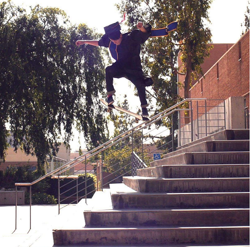

Stabilizing neural style-transfer for videos with PyTorch

|

Thomas Dougherty I am a geospatial analyst at The Aerospace Corporation. I develop deep learning and computer vision solutions for the space enterprise. I received my Masters of Science from UC Riverside, and completed my thesis Weakly-supervised Temporal Activity Localization and Classfication with Web Videos
|